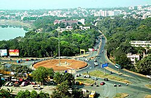

Hello! I'm Siddharth Choudhary, a tech enthusiast from Jamshedpur, Jharkhand. I'm passionate about software development, problem solving, and building innovative solutions. I enjoy exploring new technologies and continuously improving my skill set. I like to play video games, travel and read books in my free time.
About Me

My GitHub Profile picture
My Hometown - Jamshedpur
Jamshedpur, also known as Steel City, is a planned industrial city in Jharkhand. Home to India's first private iron and steel company, Tata Steel, it's renowned for its cleanliness, infrastructure, and industrial heritage. The city boasts beautiful parks, lakes, and the famous Jubilee Park, making it one of India's greenest industrial cities.
